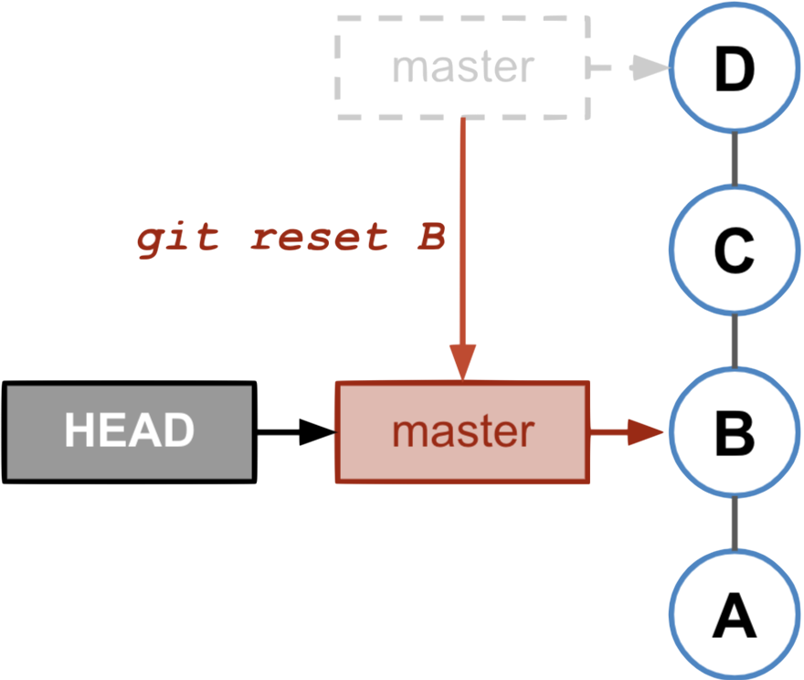
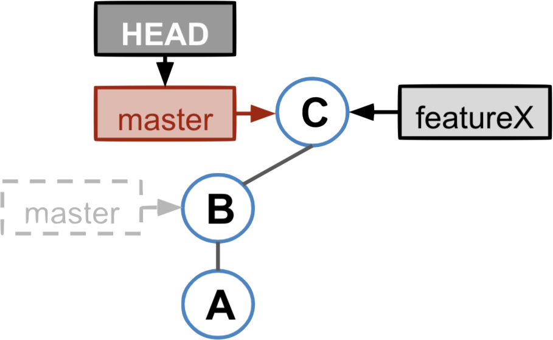
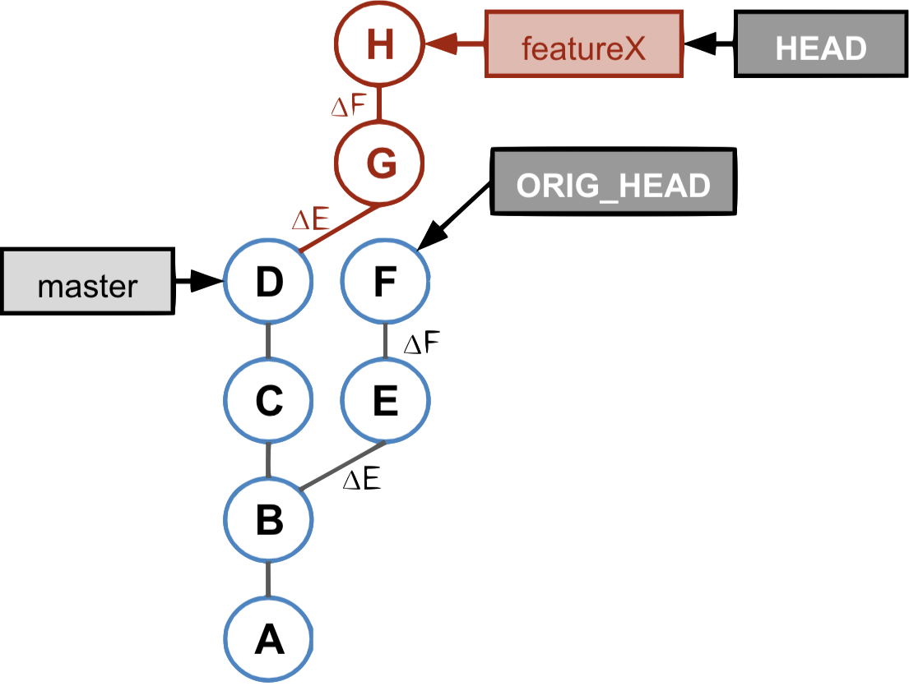
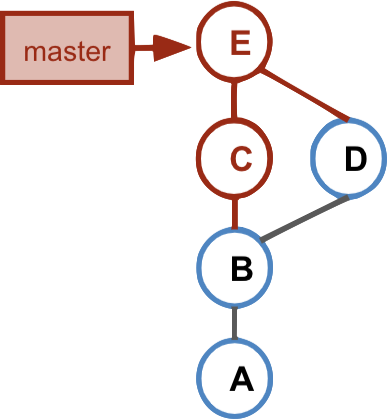
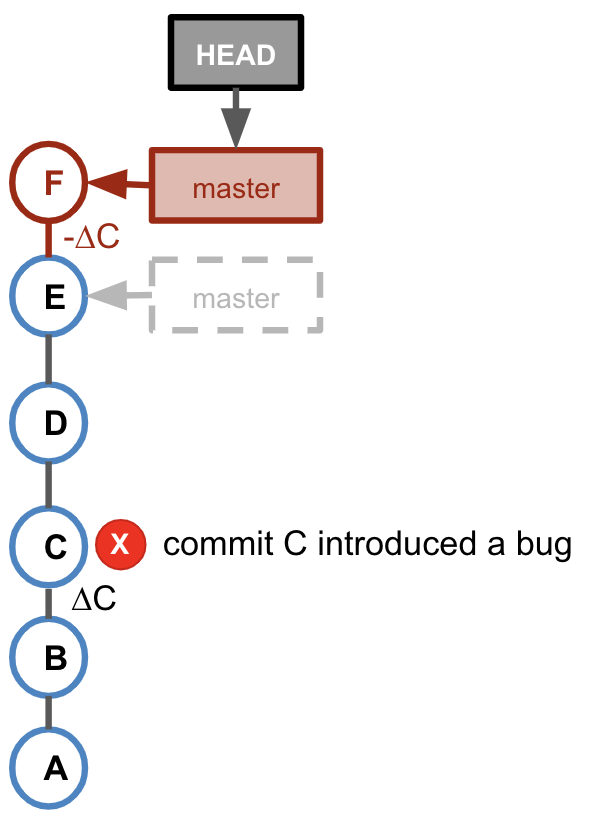
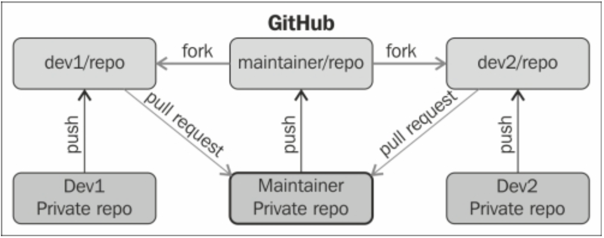
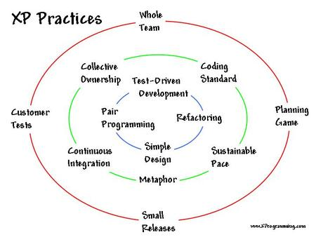
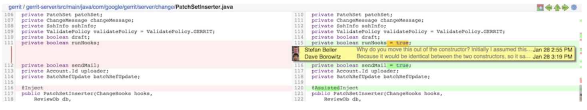
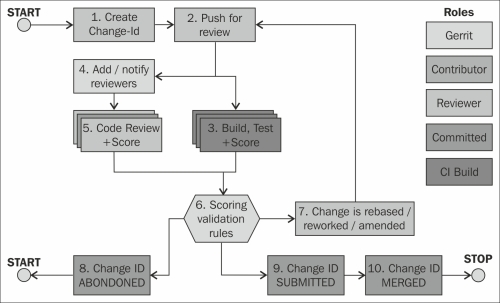

Distributed versioning systems
Distributed

Centralised

Image Credits : https://www.incredible-web.com/blog/revision-control-systems/
- Distributed means
- Each developer has a complete, local repository
- Technically the central repository is not different from the local repositories
- Easy offline usage
- Easy to branch a project
- Examples: Git, Mercurial, Bazaar
Git Repository Structure

Git Repository Structure

Git Repository Structure

Git Repository Structure

Commit Object Structure

Amend commit

Resetting Branches

HEAD is at tip of branch

After reset
New Commit after reset

- The new commit becomes successor of the commit to which the current branch points.
- The current branch is updated.
Tag

Merge
Q: What is the result of merging the featureX branch into the master branch? Which branch is updated?

`git merge featureX` :
* Merges *featureX* into the current branch (master).
* Creates a merge commit (commit with more than one parent).
* The current branch is updated.
Merge - Fast-Forward

* **Fast forward merge**
* Just moves the branch pointer.
* No creation of a merge commit.
* The creation of a merge commit can be enforced by:
```bash
git merge --no-ff
```
Cherry-Pick

* Imagine that:
* commit **E** implements a feature
* commit **F** is bug-fix
* the bug-fix **F** is needed in master

* apply changes done by the commit that is cherry-picked to a new base.
* commit message is preserved.
* new commit has no parent relation to the commit that was cherry-picked.
* `cherry-pick` can fail with conflict.
Rebase

* redo the work that was done in the *featureX* branch on top of the master branch

* rebases the current branch to a another base commit
* rebase = series of cherry-picks
* `git rebase master` rebases all commits of the *featureX* branch onto the master branch.
Merge v/s Rebase
fetch > merge > push
fetch > rebase > push

|
|
Interactive Rebase
Before interactive rebase

`git rebase -i HEAD~3`

Revert

* `git revert` undos the changes that have been done by a commit by creating a new commit that applies the inverted changes.

* `git revert` may fail due to conflicts. After resolving the conflicts and staging the conflict resolution you can create the revert commit by `git commit`.
Reset v/s Revert v/s Checkout
reset |
Commit | Discard commits/throw uncommited changes |
reset |
File | Unstage a file |
checkout |
Commit | Switch between branches |
checkout |
File | Discard changes in the working directory |
revert |
Commit | Undo commits |
revert |
File | (N/A) |
Lab Test 2 - Self Assessment Quiz
Github model for open source
Agile Best Practices
Source : http://xprogramming.com/what-is-extreme-programming/
Why there is coding standard
- Get your code (patch) accepted
- Enable team work through readability, conventions
- Ease maintenance (40% to 80% of the cost of software through its lifecycle)
- Enforce good practice e.g. reduce complexity
- Improve quality
- Work well with automated tools (e.g. counting lines of code, diffs)
Limitations of versioning system
- Versioning is not same as code review
- Pull requests are not good enough to enforce rules
- GitHub (a hosted site) has plugins, not necessarily free e.g. Codacy is free for Open Source (public) projects, same as GitHub
Code Review tools
- Several tools to considered
- Gerrit is open and compatible with
git - Created for the Android project
- Used by big open source projects such as MediaWiki and Qt
Gerrit
Discuss code
Code Review

* Quality check
* After build & test
* Automated tools e.g. Gerrit
How gerrit works


Code review workflow

Image : source
* Typically integrated with a CI/CD pipeline.
* If the code builds, then it’s good to go for review.
Refactoring
- Classic SDLC is linear: write all the code to specs and send it to QA for testing
- Refactoring is the idea that code can continuously be rewritten in a better way, do it ASAP, before it is too costly to change anything
- Reduce code complexity (and improve maintainability)
- Provide non functional enhancements
- Extensibility: re-architect the codebase more effectively
Test Driven Development
- Avoid regression
- Easier maintenance and error detection
- Test bite-sized code
- Release early and often
Types of test
- Unit testing (for e.g. Mocha for JS)
- Inegration testing
- System testing
- Interface testing
- Acceptance testing
- Performance testing
- Stress testing
- Reliability testing
The list is long...
TDD Process
- Start by adding a test
- Run all tests and make sure the new one fails
- Write the code
- Run all tests
- Refactor as needed
Lab test 3 - TDD In React
Pair programming
- Gained popularity recently
- Code quality
- Developer capacity
- Developer likes it
- Pivotal like it
Practical pair programming
##### Original recipe
* One computer
* 2 keyboards
* 2 mouses
* 2 chairs
* 2 engineers
Do that often, on dedicated workstations.
Do that often, on dedicated workstations.
##### Distributed(remote)
* Cloud IDEs such as Codenvy (hosted) and *Eclipse Che* (shared on-prem)
* IDEs such as MSFT
* Desktop sharing like TeamViewer and webconferencing tools (like microsoft teams)